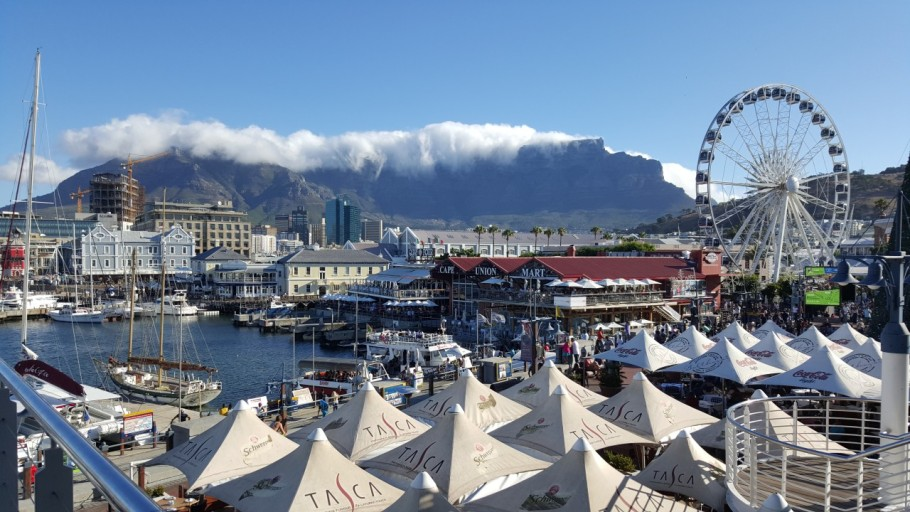
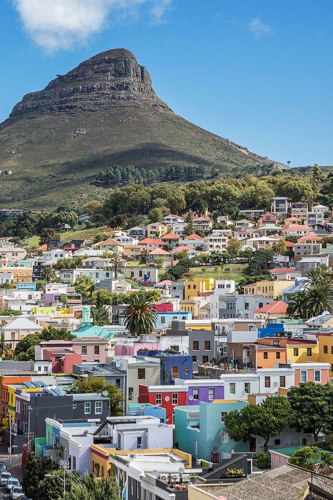

추천하는 남아공 아프리카(케이프타운) 코스!-(3일)
- [1일차-남아공 필수 코스!]
자연과 현지 느낌을 제대로 느껴보자!
웅장하고 활기찬 분위기를 느껴보는거야!
테이블 마운틴-> 워터프론트
- [2일차-구석구석 탐험해볼까!]
즐길거리가 굉장히 많다!
자유롭고 아름다운 케이프타운 을 느껴볼까!
페닌슐라 투어-> 핫베이->희망봉->컨스탄시아 와인팜->커스텐보쉬 식물원
- [3일차-느듯하고 좋은 힐링!]
마지막에 안가면 서운 할 수 있다고1
이곳저곳 구경하면서 아쉬움을 삼켜보자.. 어쩌면 더 있고싶어할지 몰라!
올드 비스킷밀->스텔렌보쉬 타운->와인투어

추천하는 음식!
BEST 5!
1.바베큐 브로보스,램 브라이(Braai)소세지 같은 요리, 굉장히 짭짤하면서 육즙과 기름이 흘러넘치는 고기이다. 보통 마당 화덕에서 저녁마다 양고기와 함꼐 구워먹는다.정말 많은 부위를 숯불에 구워서 먹는다. 양과 브로보스는 빠질 수 없는 식사중 하나이다. 진짜 고기의 질도 너무 좋고 맛있다.
2.치킨파이 독특한 향신료와 함께 바삭한 빵으로 덮힌 치킨파이. 많이 먹는 음식중 하나이다. 처음엔 살짝 거부감이 들었었지만 먹다보면 자꾸 떙긴다
3.와인남아공은 와인이 유명하다. 어딜가나 와인팜이 있고 많이 떄문에!! 나는 아직 마셔보지 못했지만 맛이 기가막히다는 이야기를 많이 들었다.
4.빌통 정말정말 흔한 간식거리! 보통은 허브와 소금을 이용해 말린 소고기를 많이 먹지만, 쿠두 나 임팔라 같은 사슴고기랑 물고기나 치킨등 다양한 고기를 말린다, (쓰고보니까 진짜 고기 많이 먹네...)
5.밀크타르트진짜 간식으로 엄청나게 많이 먹었던 밀크 타르트, 특유의 꼬소함과 부드러움은 어느 요리에서 흉내내지 못한다. 루이보스 밀크티와 같이먹으면 환상적인 맛.. 꼭!!!! 먹어보길 바란다 강추!!!

내가 주는 후기!
한마디로 말하자면, 정말 풍족하고 아름다운 나라다. 여유로운 하루, 건강하고 기분 좋은 관광지, 그리고 맛있는 음식들
다양한 인종들도 만나면서 그들의 문화와 언어를 배워가고, 다양한 동물들도 보면서 배워간다. 정말 새로운곳으로 떠나고 싶을때, 케이프타운을 추천힌다! 홈스테이도 잘 되있고
경험해 볼곳이 정말 많이 있기 떄문이다!